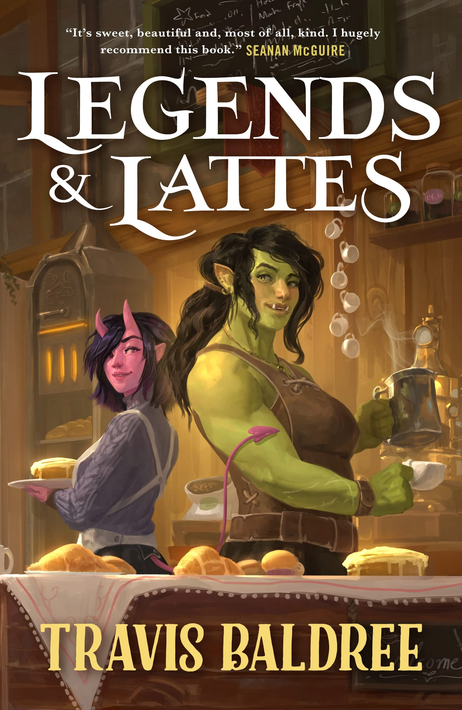
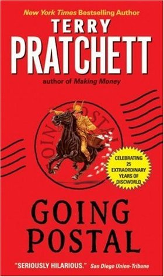

Favorite Books

Legends and Lattes by Travis Baldree
A cozy fantasy that feels like a warm hug. Adventurer orc Viv decides to hang up her sword and open up a coffee shop in a town that's never heard of coffee before. There's not much action in this book, but the pages keep turning because the characters just make you feel like you're reading about old friends.
After a lifetime of bounties and bloodshed, Viv is hanging up her sword for the last time. The battle-weary orc aims to start fresh, opening the first ever coffee shop in the city of Thune. But old and new rivals stand in the way of success — not to mention the fact that no one has the faintest idea what coffee actually is. If Viv wants to put the blade behind her and make her plans a reality, she won't be able to go it alone. But the true rewards of the uncharted path are the travelers you meet along the way. And whether drawn together by ancient magic, flaky pastry, or a freshly brewed cup, they may become partners, family, and something deeper than she ever could have dreamed.

Pride and Prejudice by Jane Austen
A classic romance that can even be recommended for people who don't like romance! Elizabeth Bennet is feisty, Mr. Darcy is awkward, Jane and Mr. Bingley are adorable together, and the rest of the Bennet family are a riot. Even though this was written at the beginning of the 1800s, it reads at a quick pace.
"It is a truth universally acknowledged, that a single man in possession of a good fortune, must be in want of a wife." So begins Pride and Prejudice, Jane Austen's classic novel of manners and mores in early-nineteenth-century England. As the Bennets prepare their five grown daughters to enter into society, each shows personality traits that illuminate their future prospects as wives. Jane, the oldest, is the most demure and traditional, and Lydia, the youngest, the most headstrong and impulsive. Attention centers on haughty second-born Elizabeth, and her blossoming relationship with the dashing but aloof Fitzwilliam Darcy. Adversaries at first in the endless rounds of balls, parties, and social gatherings, they soon develop a grudging respect for one another that blossoms into romance when each comes to appreciate the tender feelings that course beneath the veneer of their propriety and reserve.

Going Postal by Terry Pratchett
A funny fantasy story set in Pratchett's Discworld universe. Moist von Lipwig is a conman given a second chance at life if he can prove that the postal service can beat a telegraph in delivering messages. Moist is reliable, yet unreliable at the same time. It's a Discworld book, so there's going to be enough hijinks and satire to keep you laughing for days.
Suddenly, condemned arch-swindler Moist von Lipwig found himself with a noose around his neck and dropping through a trapdoor into . . . a government job? By all rights, Moist should be meeting his maker rather than being offered a position as Postmaster by Lord Vetinari, supreme ruler of Ankh-Morpork. Getting the moribund Postal Service up and running again, however, may prove an impossible task, what with literally mountains of decades-old undelivered mail clogging every nook and cranny of the broken-down post office. Worse still, Moist could swear the mail is talking to him. Worst of all, it means taking on the gargantuan, greedy Grand Trunk clacks communication monopoly and its bloodthirsty piratical headman. But if the bold and undoable are what's called for, Moist's the man for the job—to move the mail, continue breathing, get the girl, and specially deliver that invaluable commodity that every being, human or otherwise requires: hope.